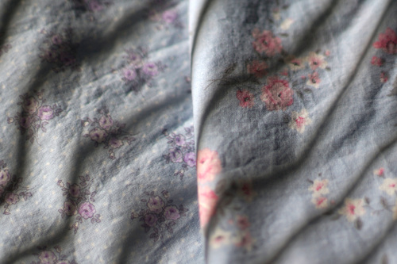

the inside says "deluxe velour" and "merrimac body made of imported fur". there were about 8 different hats in the case but i didn't like them as much as this one. another one was cute but a lot more smooshed than this one.
i want to be brave enough to wear hats. no one wears hats anymore. not even me.
I'll definitely make doll clothes out of both, but maybe a satori shirt as well. A floral satori cosplay sounds like a good time to me. I already made the hard part of any satori cosplay after all.
i think my next doll goal is a WS dearsd with a face i like. coco would be nice. i really want to be able switch out the body with lieselotte at will though. i'm going to do my best to keep saving for a doll emergency though.
i am so excited for lieselotte. please come soon lieselotte! i want to make pages for all my doll box openings here. i still have all the photos even if the text from the DoA posts are gone.
this site is now mirrored on github btw. i can never figure out git but its so much faster than uploading each file using neocities' web tool.